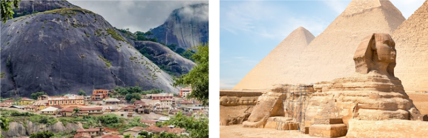

 |
O continente Africano, subestimado por todos, porem tem grande importância para o mundo todo.
Um clima predominantemente quente visto que sua localização se encontra na zona intertropical
sendo cortado pela linha do equador. No entanto, a grande extensão territorial e a diversidade de
relevo resultam em uma variedade de zonas climáticas, que vão de florestas tropicais úmidas a
desertos áridos e áreas temperadas no extremo sul.
Seu relevo é caracterizado por vastos planaltos
antigos com altitudes médias elevadas, com intenso desgaste erosivo, vale lembrar das grandes bacias
sedimentares como o "vale do Rift".
A vegetação do continente que predomina é a savana, com florestas
equatoriais densas, estepes e desertos como o Saara, alem da vegetação mediterrânea nas extremidades.
|